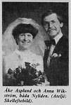

Nils Anders Åke Asplund
Odling av spannmål (utom ris), baljväxter och oljeväxter, skogsförvaltning.
| Född: | 1955-04-28 Ö. Nyliden, Skellefteå lfs, Skellefteå sn. [1] |
|---|
| Vigsel: | 1979-03-24 Nyliden, Skellefteå lfs, Skellefteå kn. [2] | 1955-04-28
Asplund, Nils Anders Åke
Nyliden 2689
931 97 Skellefteå
Mantalsskriven i Skellefteå landsförs (Skellefteå kn, Västerbottens län, Västerbotten), fastigheten Nyliden 1:4.
Född 28/4 1955 i Skellefteå landsförs (Västerbottens län, Västerbotten).
Gift man (24/3 1979).
--------------
Källor:
Mantalslängd 1991, Västerbottens län
|
|---|
Personhistoria
| Årtal | Ålder | Händelse |
|---|
| 1955 |
|
Födelse 1955-04-28 Ö. Nyliden, Skellefteå lfs, Skellefteå sn [1] |
| 1957 |
1 år |
Makan Anna Karin Viktoria Vikström föds 1957-04-17 Skelleftehamn, Skelleftehamns kbfd, Skellefteå sn [3] |
| 1977 |
22 år |
Fadern Johan Gunberg (Gunnar) Asplund dör 1977-11-22 Ö. Nyliden, Skellefteå lfs, Skellefteå kn [4] |
| 1979 |
23 år |
Vigsel Anna Karin Viktoria Vikström 1979-03-24 Nyliden, Skellefteå lfs, Skellefteå kn [2] |
| 1998 |
43 år |
Brodern Helge Gunnar Sixten Asplund dör 1998-07-12 Nyliden 24, Klutmark, Skellefteå lfs, Skellefteå kn [5] |
| 2004 |
49 år |
Modern Anna Viola Sofia Lindmark dör 2004-12-08 Nyliden 22, Skellefteå lfs, Skellefteå kn [6] |
Källor
| [1] | Mtl Västerbottens län 1971 |
| |
| | |
| [2] | Mantalslängd 1991, Västerbottens län |
| |
| | |
| [3] | Mtl Sveriges befolkning 1960 |
| |
| | |
| [4] | RTB 77 / SPAR 80 |
| |
| | |
| [5] | RTB 98 / SPAR 92f |
| |
| | |
| [6] | man91 / RFV 06 |
| |
|
|  |
1979-03-29. Vigsel: 1979-03-24
Åke Asplund och Anna Wikström, båda Nyliden.
Vigselkort i Norra Västerbotten
|
|
{kind=link}